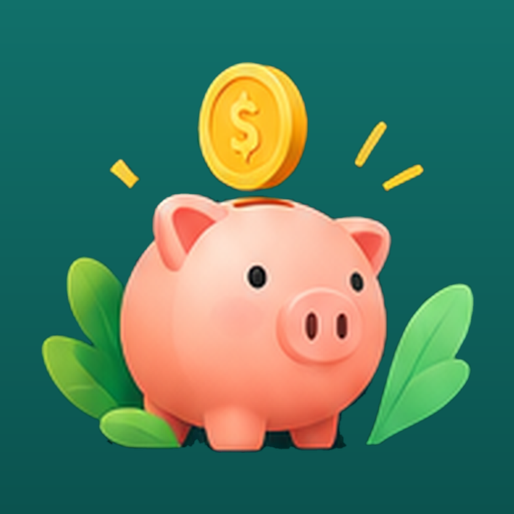
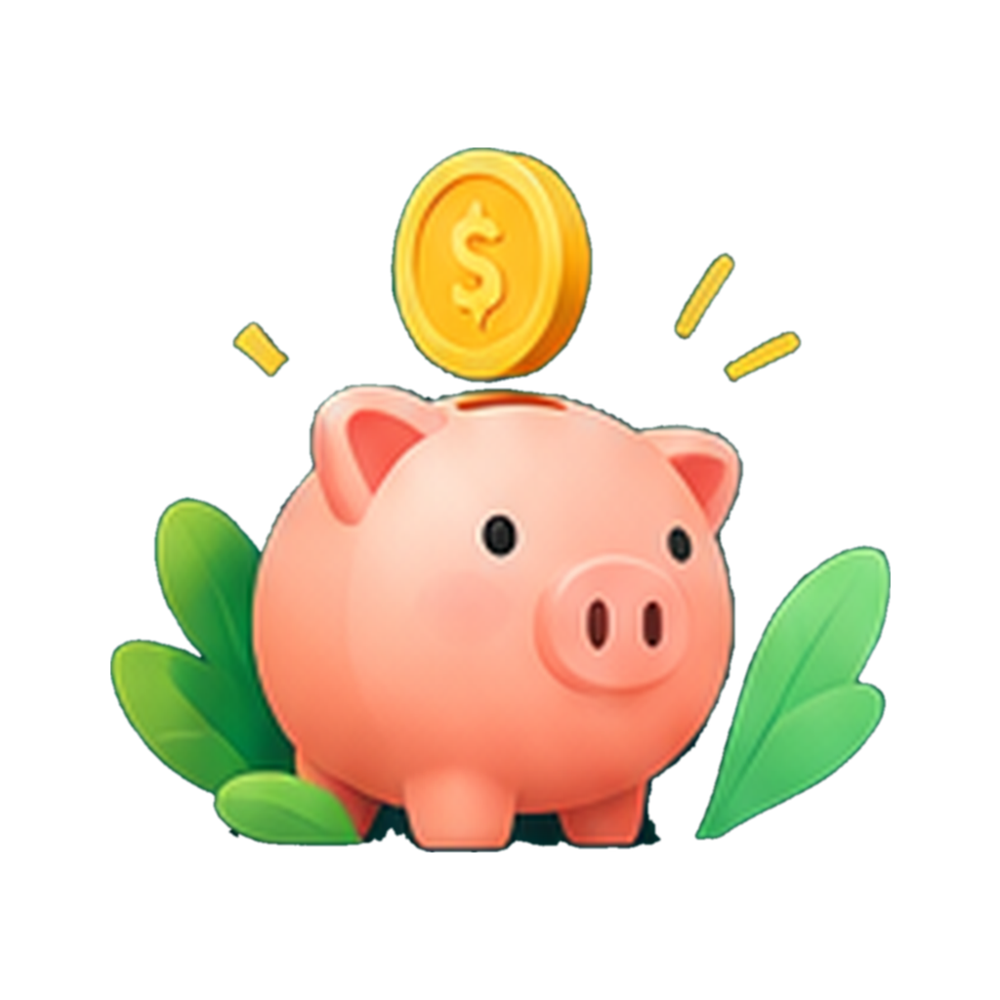
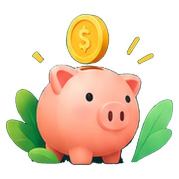

Propuesta, pendiente de aprobación. Muestra los recursos ACTUALES de docs/design/assets/ con máscaras aproximadas de Android (no es una captura de dispositivo). Las líneas amarillas punteadas marcan la zona segura (círculo de 66/108 dp del ícono adaptable; máscara circular del splash). Varios recursos se regeneran antes de copiarlos al proyecto.
icon.png, 1024×1024, sin alfa) · reutilizar tal cual para la build de prueba
backgroundColor) + primer planoCon el primer plano ACTUAL (arte al 62 % del ancho) las puntas de las hojas tocan o salen de la zona segura: se regenera al ~53 %.

Android 12+ recorta el ícono con una máscara circular (línea punteada). Con el arte actual al 78 % se cortan orejas, hojas y moneda.

vacio-alcancia.png, ya en app/assets/illustrations/)Decorativa (sin etiqueta para lectores de pantalla). Una sola alcancía por pantalla: con cuentas, en el encabezado (72 dp a 360 dp de ancho); sin cuentas, la de 120 dp en el estado vacío y no en el encabezado. Se oculta con ancho ≤ 340 dp o fuente ≥ 175 %.
